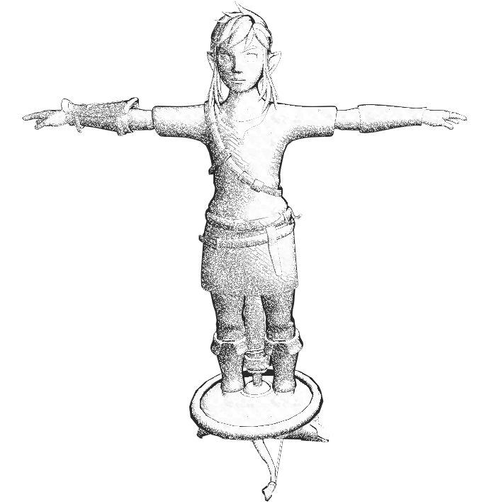
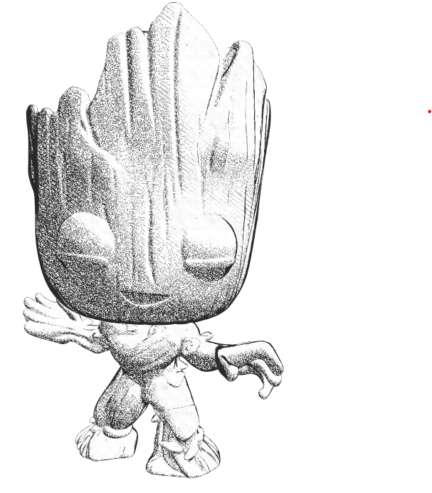

CS184/284A Spring 2025 Milestone Report: Non-photorealistic rendering machine
Names: Ryan Kwong, Lemuel Sumardy, Thomas Yeoh, Ziran Zhou
Link to webpage: https://cal-cs184-student.github.io/hw-webpages-ilovethomas/final-project/
Link to GitHub repository: https://github.com/biancanev/cs184-final-project
Abstract
Our project is a non-photorealistic rendering (NPR) machine that allows users to apply different artistic styles to 3D models in real-time. We implemented three distinct shading techniques: sketch shading, cel shading, and watercolor shading. Sketch shading offers a hand-drawn look through the use of density varying cross-hatching. Cel shading creates a cartoonish look by discretizing a diffuse or specular shader, creating noticable bands. Watercolor shading simulates painted textures through soft gradients and blooming distortions. The user can select the desired shading technique through our simple GUI and see the effect applied to the model in real-time. Our custom GUI offers the user complete control over the shading parameters used in our NPR shaders, lighting intensity and location, and camera position.Technical Approach
Sketch Shading
For sketch shading, a lot of papers such as this one used sketch textures of varying shading density and mapped it to the object. This felt a bit simple, so we decided to make a procedurally generated version. Using the same concept of varying sketch density with light we made a shader that used cross hatching to create a sketched look. One struggle we had is getting the generated cross hatching to look like natural pencil strokes rather than just diagonal lines. A couple ways we improved the organic look of the shader was by adding waviness to the lines, making the density gradient a power function rather than a linear function, and making the line colors a gradient of grayscale rather than just black and white.Cel Shading
Watercolor Shading
Results
Link Model
|

|

|

|
Groot Model
|

|
|
|
References
Contribuition from each team member
- Ryan Kwong
- Implemented sketch shader
- Creaed the basic design for the GUI
- Lemuel Sumardy
- Added most of the features in the GUI
- Video editing
- Thomas Yeoh
- Implemented cel shader
- Ziran Zhou
- Implemented watercolor shader